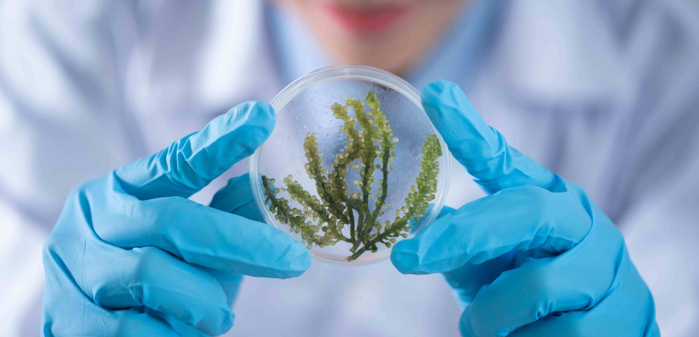

Aulas de Biologia Online • Ensino de Excelência

Plataforma de aulas online de Biologia desenvolvida para estudantes do Ensino Médio e Pré-vestibular do Colégio São Cristóvão.
Aqui você encontra aulas ao vivo, conteúdos gravados, materiais exclusivos, simulados e acompanhamento personalizado para dominar Biologia com qualidade e praticidade.
| Módulo | Descrição |
|---|---|
| 📚 Cursos | Aulas completas de Biologia Celular, Genética, Ecologia, Fisiologia Humana e mais. |
| 🎥 Aulas Ao Vivo | Transmissões ao vivo com professores e interação em tempo real. |
| 📅 Agendamentos | Reserve horários para aulas particulares ou plantões de dúvidas. |
| 📖 Material Didático | Resumos, mapas mentais, exercícios e provas anteriores. |